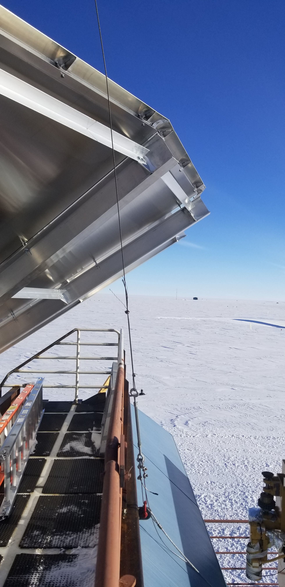
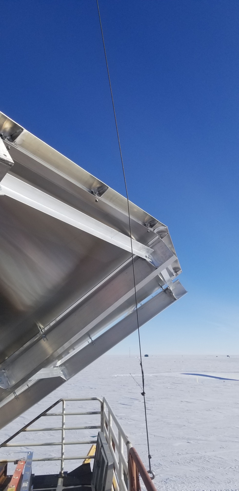
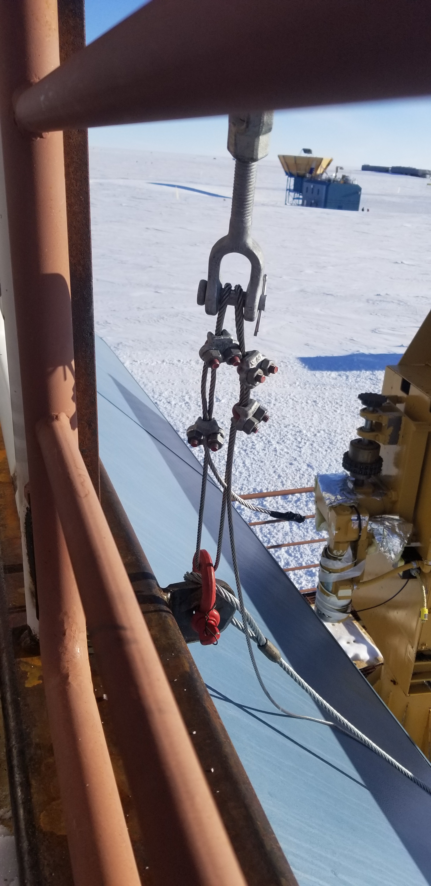

Went out to lower the mast and adjust the chopper pointing when we found that one of the lags to a guy line had come out (see picture, in red circle). Not knowing where the electrical lines were routed, I decided to fix the guy line to an anchor point that is welded to the railing. The guy line is roughly in line with where it was but farther away -- the other choices were a closer anchor point that was far from the previous alignment or the gated railing which wasn't at all structural. This defintely
|  |  |  |
Regarding the tilt of the mast, I asked Dave and Cal (the summer and winter machinists resp.) to take a look. They said that the mast needs to be significantly reworked before we try to raise it next year. In addition to fixing the tilt in the mast, they suggested that we replace any lags going into the rooftop SIPs with threaded rod with metal plates at the ends to evenly distribute the force on the guy line. For now, they agreed that the mast should be sufficiently stable to complete the calibration campaign so long as we don't lower it. When we do lower it, extreme caution should be used and the work should be done before we raise it again.